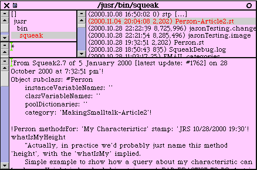
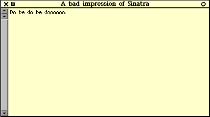
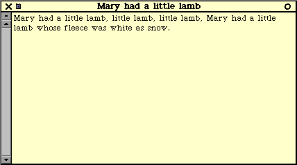
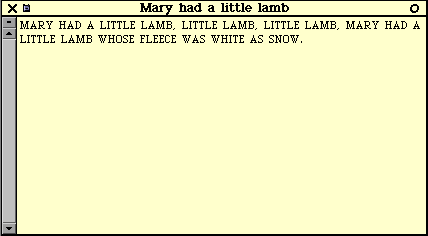
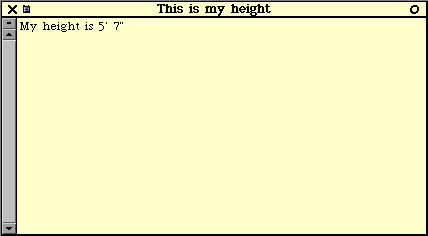
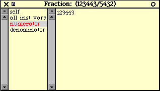
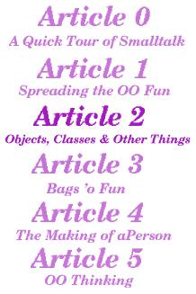

![[ Prev ]](../gx/navbar/prev.jpg)
![[ Table of Contents ]](../gx/navbar/toc.jpg)
![[ Front Page ]](../gx/navbar/frontpage.jpg)
![[ Talkback ]](../gx/navbar/talkback.jpg)
![[ FAQ ]](./../gx/navbar/faq.jpg)
![[ Next ]](../gx/navbar/next.jpg)

"Linux Gazette...making Linux just a little more fun!"

Objects, Classes and Other Things
Abstract
For those who haven't read the previous articles,
be sure to read the statement
of purpose first. This month, we're going to discuss objects
as well as classes, messages and encapsulation. For those looking
to read the whole series locally or info about upcoming articles, you can
check
the MST page. For those looking for further information
on learning Squeak, here are some
good resources.
I also need to cover another item before we get
into this article, and it's important enough to put at the top as opposed
to the Q&A section. I had
a number of people ask me how I knew what code to type, and where they
can find what objects Smalltalk has. I plan on getting to this in
article 4. I'm holding off on discussing this to simplify the presentation
and concentrate on fundamental concepts first. I've often thought
that the message isn't the medium, but rather the volume of the medium.
This has a number of connotations; in this context I don't want to present
too much too fast and overwhelm the folks who are coming in with no programming
experience at all.
As a side note, I find it humourous and sad to see
technical books that are selling by the pound these days. You see
things like: '1000 pages of <technology X> for only $19.95!',
and the Core Java 2 Fundamentals book that is 742 pages!
It's often been said that the syntax of Smalltalk is so simple that you
can put it on a postcard, as there are 2 operators, 5 reserved words1,
and 9 reserved characters. For those interested I'll add an interlude:
all I learned about Smalltalk syntax I learned
from a postcard.
Quote of the day
"Smalltalk is a wonderful language to work with - in fact, it's hard to
imagine a serious programming language being more fun than Smalltalk.
Certainly, I've had more fun programming in Smalltalk than any other language
I've worked with; so much fun that at times it's seemed incredible that
I've also been paid to enjoy myself."
-Alec Sharp, "Smalltalk
by Example", pXIX
A first look at objects
Last month, we left off with describing an object as
anything you can think of that is a noun. We implicitly extended
this concept by talking about actions that objects can do when asked.
Let's extend this concept explicitly now by describing actions objects
can do when asked as verbs. For example, you could consider a Person
as an object. You could ask the Person object to do things like:
-
Person, would you please sing?
-
Person, would you please sing Mary Had A Little Lamb?
-
Person, would you please sing Mary Had A Little Lamb, and do it loudly.
-
Person, what is your height?
Notice action 1 was just an activity with no constraints
on it. We don't tell the person what to sing, or how fast, or how
loud, etc. In our 2nd request, we specify the song to sing and in
the 3rd request we also specify that it should be sung loudly. Action
4 shows that we can not only ask the person to do something, but also ask
them something about themselves. That's right, objects have properties
just like a real world thing would (we'll come back to this). Assuming
we had a Person object (we don't, at least not yet), the corresponding
Smalltalk code would look like:
(Person new) sing.
(Person new) sing: 'MaryHadALittleLamb'.
(Person new) sing: 'MaryHadALittleLamb' andDoIt: 'loudly'.
(Person new) sing: 'MaryHadALittleLamb' andDoIt: 'quietly'.
(Person new) whatIsMyHeight.
Pretty easy stuff eh?2
Notice how the Smalltalk code is very readable and is very similar to how
I initially wrote the questions in English. Each one of these requests
would be what we Smalltalkers call a message
that the Person responds to, and the method in which they respond is determined
by what we Smalltalkers call a method.
Again, pretty easy and intuitive stuff.
Note on the last message, I switched the perspective
around to whatIsMyHeight as opposed to whatIsYourHeight.
We could easily have made a method called whatIsYourHeight, but
it's common practice to name methods from the perspective of the object3.
Now, you'll notice that each request has (Person
new) in it; you'd be correct in assuming we're asking a 5 different
people to do something - we're asking a new Person to do something each
time. What if we want to ask the same person to do everything?
There's a few ways we could do this, one of them is:
| aPerson |
aPerson := (Person new).
aPerson sing.
aPerson sing: 'MaryHadALittleLamb'.
aPerson sing: 'MaryHadALittleLamb' andDoIt: 'loudly'.
aPerson sing: 'MaryHadALittleLamb' andDoIt: 'quietly'.
aPerson whatIsMyHeight.
The first line is declaring a temporary variable.
Hmm, this is the first traditional computer term that we've used so far
in our discussion, not too bad. Since we don't have a name for the
person, we'll just call the person aPerson. Much better than
'x', 'y', or 'i' that you often see in other programming
languages. Not that you couldn't call a variable x in Smalltalk,
it's just that you're encouranged to name things descriptively. The
common convention is to run your words together with capitalizing each
successive word (IMHO, this includes acronyms too). For example,
you could ask the Person to runToTheDmv. So in the above code
snippet, we're creating a new person and assigning (:=) that person
to a temporary variable called aPerson. Then we're asking
aPerson to perform their various methods by sending them messages.
So the question naturally arises, what is 'Person'?
Thinking in terms of nouns, a Person is a specific class or subset of nouns.
Well, in Smalltalk Person is an object too, but it's a special kind
of object that is called a class.
You can think of a class as a blueprint object for making related objects.
When we ask a class to make a new instance of an object, it's called instantiating
an object. Now, coming back to the properties of an object, they
are stored in what are called instance variables
of the object4. When we were
asking aPerson for their height, they probably responded with what
they had stored in their instance variable (we don't know for sure, as
we don't know how the person determines their height).
Revisting our conception of what an object is, we
can now refine it: an object is a grouping of messages and data
that its messages can operate on. This brings us to our next
subject: Encapsulation.
Encapsu-what?
Encapsulation is a fancy
term to describe the grouping of messages and data within something we
call an object, such that other objects can't see the data and can only
get access to it via messages. The reason for the emphasis on this
topic is that this is a big difference from the way that procedural programming
traditionally viewed programs. Traditionally, the data and the methods
for changing the data were two very separate beasties. Often, when
these are in two different parts of your program, they get out of synch
and it's very hard to maintain the functions that manipulate the data when
the structure of the data changes or vice versa. This is one of the
problems that OO programming tries to address, by keeping the data and
the methods for changing the data close, it's easier to keep them in synch.
In fact, if you change how the data is stored in an object, or the method
by which you change that data, any other objects are none the wiser.
This is a Good Thing, as when you make changes, you make them in one spot,
as opposed to many spots.
So, though we could guess at what aPerson's
height is, we don't really know until we ask them whatIsYourHeight.
Now, the person could respond by remembering the last time he walked past
a height marker in the local Quick-E-Mart. After a number of times
of asking their height, they realize that maybe they should give a better
answer, so they change the method of their respone by checking their height
against a measuring tape. To us, we had no idea that how they determined
their answer changed, and that's good as we really don't care how they
determine it, we only care about the answer.
Responsibilities
A Very Key thing in OO programming, is
considering the responsibilities that an
object should have. Just like a real world person, aPerson
object also has responsibilities. In our example, aPerson
is rather lucky, as they only have the responsibility of singing or answering
their height. They don't have the changeTheStinkyBaby responsibility.
Figuring out the appropriate responsibilities for
objects is one of the key things in OO programming. If you don't
have appropriate responsibilites, you run into problems like object
bloat. This is when an object does too many things and is 'spread
too thin'. A jack of all trades does everything pretty poorly.
On the other hand though, you need to strike a good balance, as a specialist
that is too specialized does nothing very well, and it takes a huge number
of specialists to do anything.
Did I mention figuring out the appropriate responsibilities
for objects is one of the key things in OO programming?
Putting it all together
I've been holding off running any code thus far, as
I wanted you to concentrate on the concepts. In the same vein, I'm
going to hold off describing how to make a Person class to concentrate
on other concepts first. We'll get to stepping through creating a
Person
class in the article after next, as I want to cover inheritence, polymorphism
and abstract classes first. In the meantime though, I've included
the source code below, if you're curious
and want to peek or if you want to compare the code against other languages
you know.
To load the code, we need to file
it in to Squeak. If you're reading this remotely, you need to
first download the code
from here, rename
it to remove
the ".txt" extension, save
it where ever you want. Now open the file list (Menus>open...>file
list), find your downloaded file (Person-Article2.st), left
click on the file in the upper right corner to select, then middle
click>fileIn.
For the read-along folks, the file browser looks like:

Now, you can go back to the above code and execute
it. If I was really motivated/sadistic, for the singing parts I could
have actually recorded myself singing the songs and have the commands play
them. However, I took the obvious shortcut and just opened windows
with the song text in them.
To exeute code, highlight the code, middle click>do
it (or you can hit Alt-d). Try doing one line at
a time, or multiple lines at a time. You'll note with the second
example that uses a temporary variable, you'll have to highlight multiple
lines to get that temporary variable included in execution. Try commenting
out parts with "double quotes" - double quotes, are the Smalltalk
comment indicator. ie: "This is a comment" You'll notice
that when we comment out code and re-execute that we didn't need to recompile,
which is nice... compiling is so passé and time consuming.
For the read-along folk, when you execute, this
is what you'll see:
(Person new) sing.

(Person new) sing: 'MaryHadALittleLamb'.

(Person new) sing: 'MaryHadALittleLamb' andDoIt: 'loudly'.

(Person new) sing: 'MaryHadALittleLamb' andDoIt: 'quietly'.
(Person new) whatIsMyHeight.

Looking forward
The next article will cover inheritence, polymorphism,
and abstract classes as well as introducing the collection classes. Note:
this time around, the sweet squeak is going to do some explaining, so be
sure to read that section.
All I learned about Smalltalk syntax I learned
from a postcard
This is an aside really, if you're coming into Smalltalk cold and are confused
by this table, don't worry about it as we'll be covering this as we go
along. This is here for the curious or the folks who have other programming
experience to compare.
-
Operators
-
:= this is assignment (or a left
pointing arrow in Squeak)
-
^ this is return (or an
upwards pointing arrow in Squeak)
-
Reserved Words5
-
nil this is nothing, nada, nil
-
true
-
false
-
self this is the object itself
-
super this is the object's parent
-
Reserved characters
-
| this indicates
a temporary variable
-
$ this indicates a character
-
# this indicates a literal
-
! this is a fileout delimiter
-
() this indicates precedence
-
[] this indicates a block of code
-
" this indicates a comment
A Sweet Squeak
This section typically won't explore/explain code or
example, but this time we'll make an exception. This time, we're
going to play with numbers, as that's a common thing for introductory programming
articles/books to do and is an easy way to compare languages. People
with some programming experience will appreciate this more, people with
no programming experience will wonder why all languages can't do this.
Let's start of with factorials. For those
not familiar with a factorial, it's most easily described by examples:
1 factorial = 1
2 factorial = 2*1
3 factorial = 3*2*1
4 factorial = 4*3*2*1
When you do the below snippet, you won't see anything
happen. That's because the below code doesn't open any windows to
report back it's results. To see it's results, you can do to things
instead of doing it:
-
print it (middle click>print it)
-
printing something will print an ASCII representation of the return object
to the workspace
-
inspect it (middle click>inspect)
-
inspecting something will open up an object inspector on the return object.
This is an incredibly powerful feature, as you can look at and play
with objects in real time! If you're not sure how an object is working,
you can look at it and poke it to see how it behaves, and you can change
how it behaves in real time.
"Try printing this, you'll see the answer '120' printed in the workspace"
5 factorial.
"Now print this, and you'll see a very large number as the result, since
it's 1067 digits long, I'm not going to paste it in here. Note,
this takes 5.9 seconds to run on my P200, which is pretty respectable performance.
Also note the size of the numbers you can work
with - you don't have the usual predefined fixed limits such as an int
that has the range from -2,147,483,648 to 2,147,483,647."
1000 factorial
"If you want to and have the time, just for grins try 10000 factorial
(I didn't have the patience to run this on my machine, even in another
thread)"
"For the curious, no I didn't count the number of digits returned from
1000 factorial, since the message factorial returns a LargeInteger, we
can just ask that LargeInteger what size it is."
(1000 factorial) size
"If you want to check that the correct numbers are actually being computed,
try this and it should give you an answer of 1000"
1000 factorial // 999 factorial
"Looking for what kind of precision you can get? Try:"
123443/5432
"The interesting thing you'll note is that it returns a Fraction!
No rounding off to the first 5 decimal places by default. Instead
of printing it, try inspecting this guy, you'll see a Fraction object,
with a numerator and denominator just as you'd expect:"

"Of course, you can use floats too, in which case you do get a rounding
off - to 14 places give or take depending on the flavour of Smalltalk you're
using. Try this, and you'll get the answer: 22.72426793416332"
123443.45/5432.23
"Finally, for those curious about how long things take, to time something
in Smalltalk you can print this, which will print out the milliseconds
it took to run. These measurements are not even meant to be toy
benchmarks, but are just presented for interest."
Time millisecondsToRun: [100 factorial]
Time millisecondsToRun: [1000 factorial]
"On my P200, the above lines took:
0.020 seconds
5.967 seconds"
People with some programming experience will notice
that we didn't have to fuss with what types of numbers we're working with,
(integers, large integers, floats, large floats), or type mismatches, or
predefined size limitations, or wrapping primitive types in objects then
unwrapping them or any other of this type of nonsense ;-). We just
naturally typed in what we wanted to do without having to do any jumping
through hoops for the sake of the computer. This comes from the power
of P&P: Pure objects and Polymorphism (which we'll discuss
next time).
Questions and Answers
These are the answers for questions on previous articles that I could work
through in my limited time available. I picked out the ones I thought
most appropriate for the series. If you want a faster response, or
I didn't get to your question, try posting your question to the comp.lang.smalltalk
newsgroup, or the Swiki.
Q: Can you show how your examples can be done in Java?
I'll try and answer this without getting on a soapbox (language questions
are often equivalent to religous questions). There's three parts
to this answer:
-
Over the years, I've programmed in a decent number of languages/environments6.
I've been programming in Java off and on since '95, and like any language
it has its pros and cons. However, I don't find programming in Java
very fun. On my day job I'll work in Java, C, C++, etc as needed
since they're just tools to get a job done, but for my hobby projects I
use Smalltalk.
-
I find Java is just redoing a lot of stuff that Smalltalk already had (garbage
collection, virtual machine, JIT VM, write once run anywhere) with the
baggage of trying to be similar to C/C++ (primitive types, large amount
of syntax, encouraging functional programming, strong typing). I
don't want to play around with old news for hobby projects, I like to play
with new and nifty stuff.
-
I really like meta programming, which I just can't do in Java or Windoze.
Q: What is a good beginner's Smalltalk book?
A: This really depends on what your motivations are. For Squeak,
I don't know of any good beginner's books as all the material I've seen
on it has been free online
resources (even better than a book IMHO) Be sure to check out The
Squeak FAQ (This is also a Wiki, so the cool thing is that you can
post your own questions to a living document).
Personally, I've found many beginner Smalltalk books
to be written at too simple of a level. If pressed, I'd have to say
my favourite introductory Smalltalk book is Smalltalk by Example,
by Alec Sharp, ISBN 0-07-913036-4. It's geared towards beginner->intermediate
topics for VisualWorks Smalltalk. If you want you can get the NonCommercial
version of VisualWorks to play in, though many of his examples should work
in Squeak.
Q: What is a skin?
A: A skin is an installable look-n-feel or theme. In squeak you
can install a Windoze look-n-feel, MacOS Aqua look-n-feel, etc. (not
sure how many skins are out there or what state they're in). I remember
VisualWorks Smalltalk having the skins concept back in '94 (wasn't called
a skin back then)- it's one of the things about Smalltalk that first caught
my eye. At the time I had just spent a year doing a very painful
port of OpenWindows to Motif for parts of a C based application, then I
stolled past a coworker's desk and they showed me how they could switch
the look-n-feel of their Smalltalk application from Windoze to Motif to
MacOS with a click of the mouse. Talk about a productivity boost!
Q: Can you have Smalltalk run in web browsers?
A: You certainly can, in fact I thought about setting up a Squeaklet
that people could execute the snippets from this series in from the comfort
of their web browsers... yeah, you can have a development environment in
your web browser, not just runtime code. However, it was just one
more thing for me to do in my limited time and I decided to forgo it for
now. This is a possible future topic. BTW - most flavours of
Smalltalk have some mechanism to run thin clients in a web browser.
Q: Where is the 'main' function?
A: Smalltalk doesn't have a 'main' function, this can be confusing
to Smalltalk newbies as so many other languages have this notion.
Conceptually, Smalltalk is an always running set of live objects which
is why there is no 'main' function - if your enviroment is always running,
having a 'main' function is nonsensical as you're not starting or ending
anywhere. When you want to start an application you've written, you
merely ask it to open up its window that it uses as a starting point.
When you deliver an application, you merely open up your application's
starting window and package your environment (this is a simplification
here).
Realistically though, you have to have some starting
point as you need to shut down your computer sometimes. Well, Smalltalk
does what is called saving an image. It's called an image because
what you're saving is really a snapshot in time of your environment.
When you start it up again, everything is exactly where you left it.
To do this, Smalltalk has some bootstrap code to get itself going again,
which could technically be considered a 'main' function. However,
the point is that you do not have a 'main' function when writing an application.
Article Glossary
This is a glossary of terms that I've used for the first time in this series,
or a term that I want to refine. If you don't see a term defined
here, try the ongoing glossary in the local location: [LL].
Class
(def 1-simple) You
can think of a class as a blueprint object for making objects.
Encapsulation
The grouping of messages
and data within something we call an object, such that other objects can't
see the data and can only get access to it via messages.
File it in
The act of loading Smalltalk
code into Squeak.
Instance Variable
(def 1-simple) The
place where objects store their properties/characteristics
Instantiate
{In-stan-shee-ate} When
we ask a class to make a new instance of an object, we say that we're instantiating
that object.
Message
(def 1-simple) A request
you can ask of an object.
Method
(def 1-simple) Determines
how an object will respond to a message. The method in which an object
responds is determined by a method.
Object
(def 2) an object is a grouping
of messages and data that its messages can operate on.
Object bloat
(def1 - simple) When an
object does too many things and is 'spread too thin'. A jack of all
trades does everything pretty poorly.
Responsibility
The things that an
object can/should do.
Toy benchmark
A benchmark is a
method of measuring the performance of something, and a toy benchmark is
a trivial benchmark that doesn't give a good refection of performance as
it's too simple or too narrow.
Variable
(def 1-simple) A holding
reference for something, for example, a holding space for an object.
It gives you a handle to refer to that something that it is holding on
to for you.
Footnotes
[1] As Eric Clayberg once pointed out in comp.lang.smalltalk, technically
speaking Smalltalk has no reserved words, since you can create methods
using these reserved names (though you sure wouldn't want to!) Though
I agree on this technicality, I include these words, as for practical purposes
they are reserved.
[2] Does it show I'm a Canuck?
[3] Actually, in practice we'd probably just name the method height,
with the whatIsYour or whatIsMy height implied.
[4] Properties of objects can be stored in other places too, but I'm
not going into that now, this is a very common place to store things.
[5] See [1]
[6] Smalltalk (VisualWorks, VSE, VisualAge, Squeak), Java (VisualAge,
J++), C, C++, Tcl/Tk/Expect, sh/ksh/csh scripting, Turbo Pascal, Fortran.
/ Solaris, SunOS, HP-UX, Linux, Windows NT, 95, & 3.1, Mac OS
Statement of purpose
When I wrote the first Making Smalltalk with the Penguin
article
back in March of 2000 [LL],
my target audience was experienced programmers who didn't have much exposure
to OO programming or to Smalltalk.
The article's intent was to give an overview of my favourite programming
language on my favourite operating system. Since then, I've had a
fair amount of email asking introductory type questions about Smalltalk
and OO programming. So I thought I'd try my hand at a small series.
The target audience for this series are people new
to OO or new to programming altogether. The intent is to not only
introduce OO programming, but to also spread the fun of Smalltalking.
Why do this format/effort when there's lots of good reference
material out there? Two reasons really: 1) Tutorials are
great, but can be static and dated pretty quickly. 2) An ongoing
series tends to be more engaging and digestible.
To help address the second reason above, my intent
is to keep the articles concise so they can be digested in under an hour.
Hopefully, as newbies follow along, they can refer back to the original
article and make more sense of it. I plan on having a touch of advanced
stuff once in a while to add flavour and as before, the articles are going
to be written for read-along or code-along people.
Something new I'm going to try is to make the ongoing
series viewable in a contiguous fashion and downloadable in one chunk for
people who want to browse the series locally. To do this, click on
TOC grapic to at the top of the article. The articles also have 2
sets of links: one set for www links, another set for local links,
indicated as: [LL] for downloaded local
reading.
Why Smalltalk?
I believe Smalltalk is the best environment
to learn OO programming in because:
-
Smalltalk has a very active and very helpful community; when you post a
question to the Smalltalk newsgroups you very often get an answer, unlike
many other newsgroups
-
is very easy to learn... one of it's original design intentions was to
be a learning environment for children
-
is a pure OO environment and encourages OO programming (as opposed to encouraging
procedural/Object mixed programming)
-
cutting your teeth in Smalltalk makes you a better OO programmer in any
other language, because of the previous bullet
-
is a portable environment: write once, run anywhere, so people can
learn on whatever OS they're running (as opposed to just the M$ variety)
-
can look at and manipulate objects in real time; I haven't seen this ability
in any other environment
-
Smalltalk is written in Smalltalk. You can view how the language
is put together to learn the language, and you can change anything that
you don't like about it.
-
has garbage collection, no manual memory management, no explicit pointers
-
is a literate language; by this I mean the syntax is very simple and is
geared towards programmer readability.
-
there's lots of Cool Things that you can do in it that I haven't seen anywhere
else (will have some examples along the way)
-
...and best of all: it's fun.
In particular, I'm going to use Squeak
as the playing vehicle. You'll notice this is a different flavour
of Smalltalk than I used in my first article. I've never used Squeak
before, so this'll be a learning experience for me too. The reasons
for this are:
-
It's a completely opensource project
-
It has some Really Cool features that I haven't seen in other flavours
of Smalltalk
-
It has a comparitively small footprint and it's very easy to install
-
It has a strong Swiki site
(a Wiki site hosted in Squeak, hence Squeak
Wiki)
Person Sample Smalltalk Code
This is a sample of what the Smalltalk code looks like for the curious
or for people who want to compare with known languages. For people
who are confused by below code, don't worry, as we'll be stepping through
how you create it and what it means in a future article.
"This is a Class definition"
Object subclass: #Person
instanceVariableNames: ''
classVariableNames: ''
poolDictionaries: ''
category: 'MakingSmalltalk-Article2'
"My Characteristics is a category of methods for the class (similar
to an interface in Java (but it's not enforced))"
Person methodsFor: 'My Characteristics'
"The 1 method in the My Characteristics category"
whatIsMyHeight
"Actually, in practice we'd probably just name this method
'height', with the 'whatIsMy' implied.
Simple example to show how a query about my characteristic
can be done. Ah-ha - notice that the height is not being returned
via an instance variable as we guessed at above, but is in fact hardcoded...
A BAD PRACTICE TO DO, but is fine for this example to keep things simple,
and wanted to show how to do a ' in a string"
(Workspace new contents: 'My height is 5'' 7"') openLabel:
'This is my height'! !
"This is the singing category, it has 6 methods"
Person methodsFor: 'Singing'
"And the methods for singing - method 1 of 6"
maryHadALittleLambLyrics
^'Mary had a little lamb, little lamb, little lamb, Mary had
a little lamb whose fleece was white as snow.'
"singing method 2 of 6, we use the 'my' prefix convention to indicate
a private method"
mySing: someLyrics inManner: anAdjective withTitle: aTitle
"Using simple logic here for illustrative purposes - if the
adjective is not 'loudly' or 'quietly' just ignore how we're being asked
to sing"
| tmpLyrics |
anAdjective = 'loudly'
ifTrue: [tmpLyrics := someLyrics asUppercase].
anAdjective = 'quietly'
ifTrue: [tmpLyrics := someLyrics asLowercase].
self mySing: tmpLyrics withTitle: aTitle
"singing method 3 of 6"
mySing: someLyrics withTitle: aTitle
(Workspace new contents: someLyrics) openLabel: aTitle
"singing method 4 of 6"
sing
self mySing: 'Do be do be doooooo.' withTitle: 'A bad impression
of Sinatra'
"singing method 5 of 6"
sing: aSong
aSong = 'MaryHadALittleLamb'
ifTrue: [self mySing: self maryHadALittleLambLyrics withTitle:
'Mary had a little lamb']
ifFalse: [self sing].
"singing method 6 of 6"
sing: aSong andDoIt: anAdjective
aSong = 'MaryHadALittleLamb'
ifTrue: [self mySing: self maryHadALittleLambLyrics inManner:
anAdjective withTitle: 'Mary had a little lamb']
ifFalse: [self sing].

Previous Articles
The image on the right links to Steffler's site.
Copyright © 2000, Jason Steffler.
Copying license http://www.linuxgazette.net/copying.html
Published in Issue 60 of Linux Gazette, December 2000